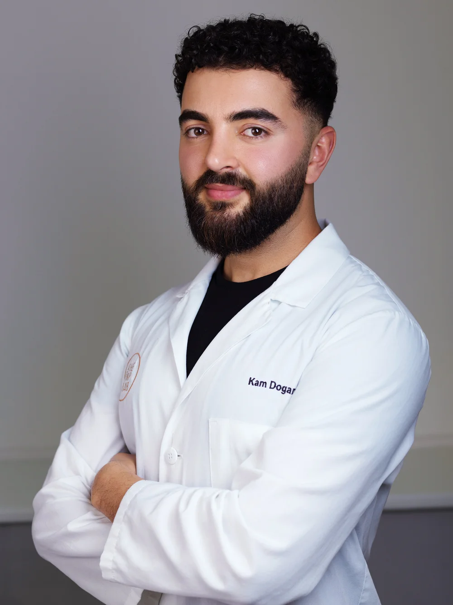
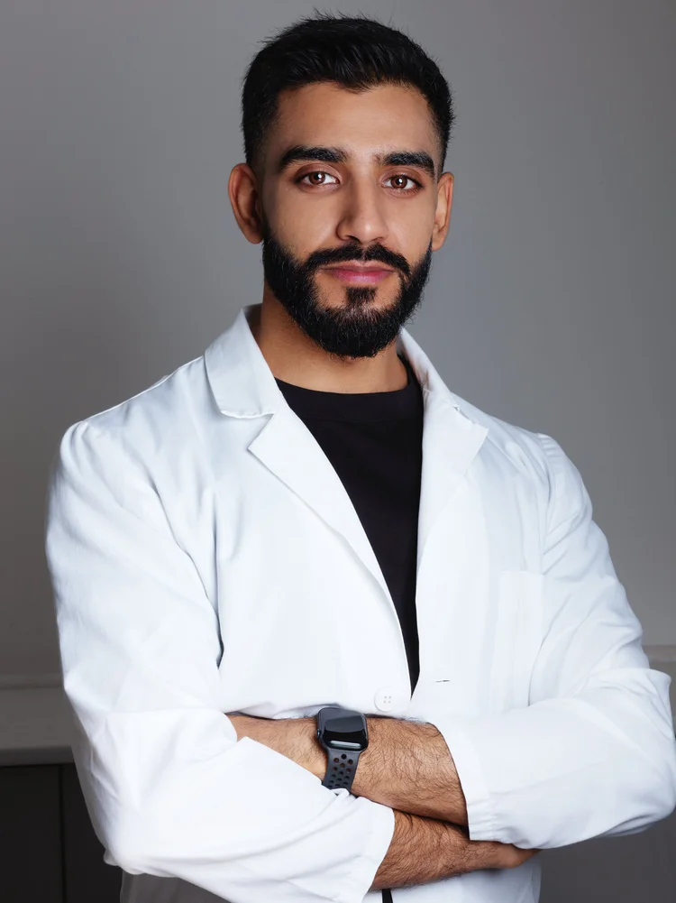
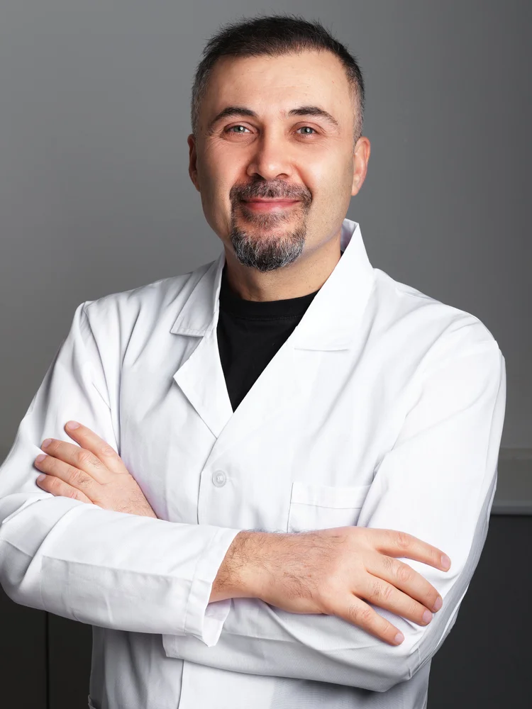
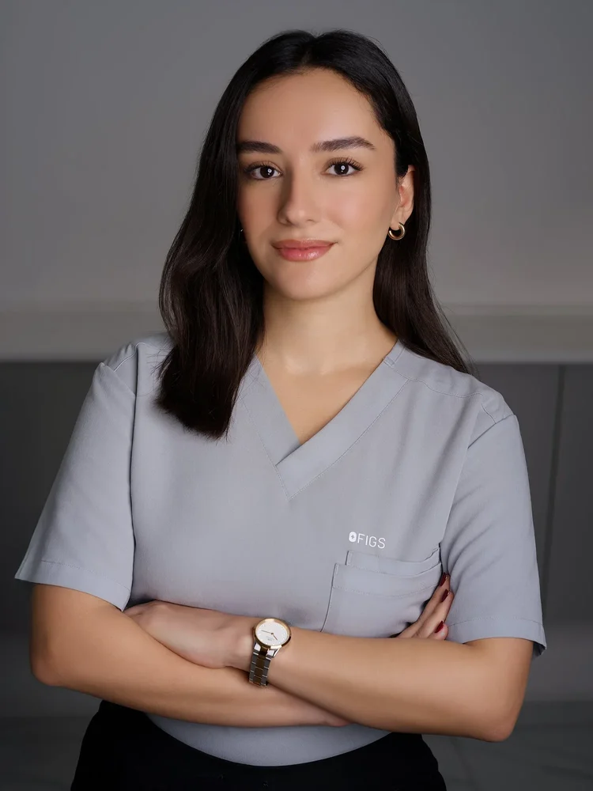
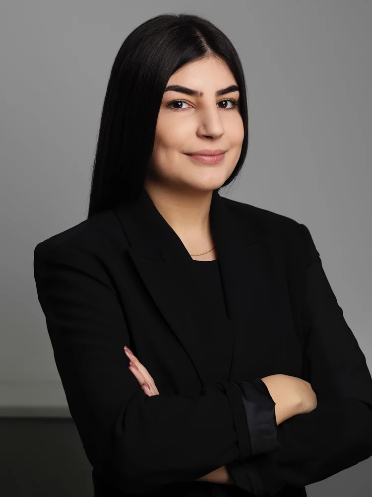
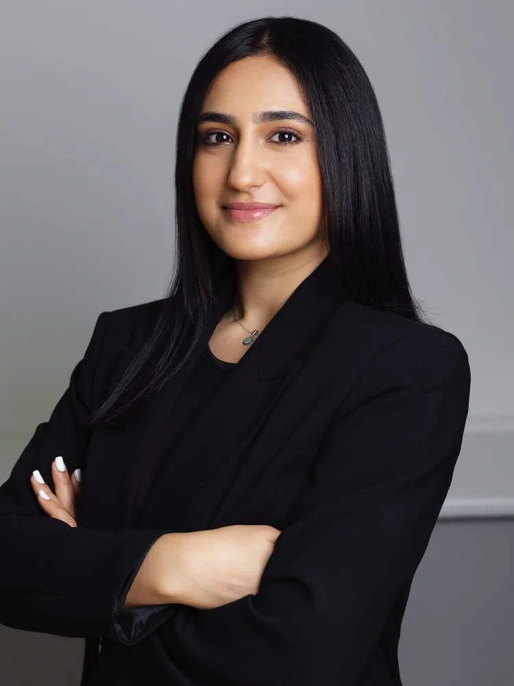
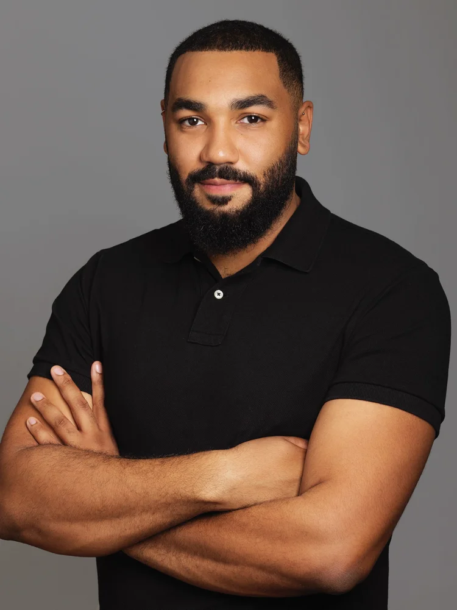

One specialty.
Everything built outward from it.
The first clinic in the UK specialising in, and devoted to, Platelet Rich Plasma — led by Mr Kam Dogan.
Regulated, registered

The regulator that licenses doctors to practise in the UK. Our medical doctors hold current GMC registration.

The regulator for dental professionals. Dentists treating at the clinic are registered and practise within their scope.

The regulator for nurses. Our Advanced and Registered Nurse Practitioners are on the NMC register.
Bespoke because the evidence differs
Client-centred quality, results and safety run through every part of the clinic. Treatment plans are built around individual needs, and we believe in natural-looking results — the aim is to enhance your features, not to change them.
Who you will meet

Biomedical Sciences at the University of Westminster, then four years at The Doctors Laboratory and UCL Hospitals, where an interest in haematology became PRP research.
He moved into aesthetics in 2017, and trains and manages every member of staff. Currently reading Dermatology in Clinical Practice — a second Master's.

Studied Dentistry in Bulgaria, graduating in 2022, with interests beyond it in facial aesthetics and hair restoration.
He treats both face and hair — Morpheus8 for skin tightening and revitalisation, and PRP protocols for hair loss, using our bespoke methods to stimulate growth and restore density.

GMC registered, with over twenty years in trauma and orthopaedic surgery — back and neck, hand and foot, sports injuries and limb deformities.
Over forty published research papers in orthopaedics and MSK injections, and fellowships in Türkiye, Germany, Switzerland and the USA. At TPL he specialises in PRP for hair loss.
Twenty years with the NHS, now consulting in healthcare on best practice, compliance and training for private clinics and hospitals.
As in-house Quality Assurance Manager she holds HR, health and safety and staff training, and treats as an Advanced Nurse Practitioner.

Trained as a hair transplant technician in established Istanbul clinics before joining Mayfair.
She now conducts the clinic's laboratory work, with extensive knowledge of hair loss treatment.

A law degree first, then an interest in aesthetics and medicine, and years of training here.
Now a Registered Nurse Practitioner offering PRP for hair loss, energy-based treatments, anti-wrinkle injections and skin boosters.

Journalism at UCA in Surrey, then editorial and public relations, and later digital marketing.
Rosa is responsible for customer service and the clinic's day-to-day running, and is our in-house Marketing Manager. Collaboration and partnership enquiries: rosa@theprplab.com

A finance advisor at his local council before TPL, with years of experience in customer service and finance.
Nathan manages our Mayfair clinic — customer service, day-to-day activities and finances.
Many years in healthcare across GP practices, and the medical knowledge that came with it.
Miros looks after customer service and day-to-day activities, and is PA to our lead practitioner, Kam.
Invisible Hair Transplant™ consultations are arranged directly, not through the clinic diary.
Surgeon consultation →